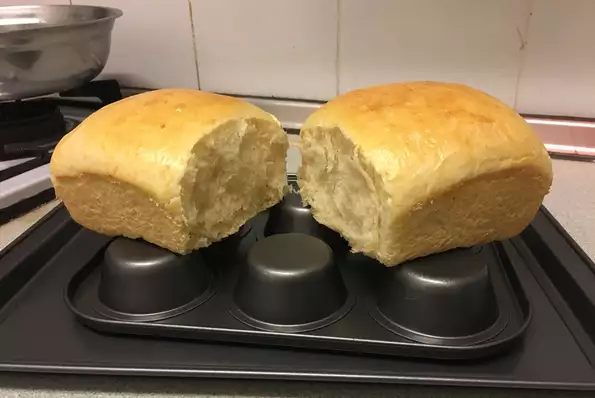

Hokkaido Milk Bread

Ingriedients
Tangzhong (Milk Paste):
- 1/2 cup milk
- 4 tsp bread flour
Bread Dough:
- 1/2 cup milk
- 1 egg, beaten
- 1/2 tsp salt
- 2 1/2 cups bread flour
- 2 tsp instant yeast
- 2 tbsp superfine sugar, or more to taste
- 1/4 cup butter, softened
Steps
-
Make the tangzhong by heating up milk in a small pot. Stir in bread flour
until a thick paste forms. Pour paste into a medium bowl. Add 1/2 cup milk
and beaten egg; mix well.
-
Place flour and yeast in a large mixing bowl. Mix with a spatula or by hand.
Pour in tangzhong mixture. Stir well with a spatula until no dry spots remain.
Gather dough in the middle of the bowl. Cover with a damp towel. Let rest for 20 minutes.
-
Add salt to the dough and knead until incorporated. Repeat with sugar, 1 tablespoon
at a time. Knead until dough is smooth, about 10 minutes. Add butter; keep kneading
until evenly incorporated and dough is smooth.
-
Form dough into a ball and place into a well oiled bowl. Turn dough to grease on all sides.
Let proof at room temperature until doubled, about 1 hour.
-
Turn dough out onto a clean work surface and deflate it. Press gently into a rectangle; roll
up into a cylinder and transfer to a loaf pan. Let loaf proof until doubled, about 1 hour.
-
Preheat the oven to 375 degrees F (190 degrees C).
-
Place loaf pan on the middle rack of the preheated oven and reduce oven temperature to 350 degrees
F (175 degrees C). Bake until golden brown, 30 to 35 minutes. Cool for 5 minutes before inverting
onto a cooling rack. Cool completely before slicing.